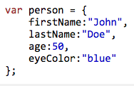
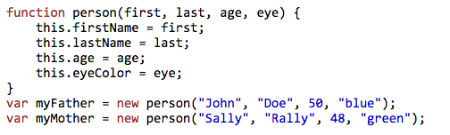

JavaScript vs. Ruby
5/26/15
JavaScript is responsible for a wide range of applications in modern day computing and engineering. This language was originally developed in 1995 and has developed wide spread appraisal for it's simplicity and application. As I embark on my journey to develop a better understanding of the fabrics that essentially govern society today, I would be missing a huge piece of the puzzle if I never thought of dipping my toes in JavaScript. This language is versatile and usefull for large scale applications. Considering I started my journey looking into the beautiful language of Ruby, it makes sense for me to make some comparisons and distinctions between the functionality of the two. More specifically, this blog will focus on Ruby Hashes vs. JavaScript Objects.
Ruby hashes and JavaScript (JS) Objects are similar in structure but perform entirely different tasks. To begin, Ruby hashes are considered to be a key/ value data structure accessible by calling on the key that is associated with the value. Ruby hashes can be iterated and manipulated using both ruby built in methods and independently developed methods. Hashes are designed to store in the form of a list and can be accessed using any data type, whether it be a string or a number. Lets say we want to create a hash that contained the names as keys and grades as values, here is what it would look like:
Now JS objects store mutliple data types indicating a number of attributes associated with the object. There are different ways to create a JavaScript object, literally and constructively. JS objects have a very similar structure to ruby hashes where there is a value on the left, usually a variable, and a datatype on the right. Ruby hashes and JS objects can also be accessed and manipulated in a very similar fashion. Differences rest in the ways we initialze JS objects especially when it is designed constructively. Below is an example of a contructive and a literal object. I hope you all learned something new!
 